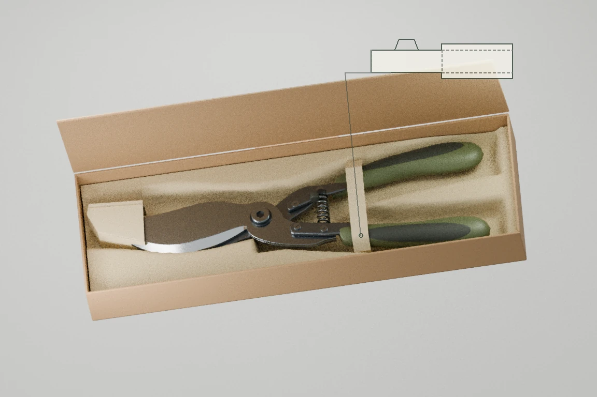

FABRIQUÉ COMME IL FAUT
Une fabrication OEM maîtrisée transforme des spécifications approuvées en production reproductible.

Peut-on affiner la poignée ici ?Voici le contour corrigé.

Les alésages de guidage partagent la même référence.Les tolérances suivent le plan que vous validez.

Acier de lame et matière des poignées.Nous achetons les nuances que vous avez validées.

Testez la prise en main et le pivot.Vous validez l’échantillon avant la production.

Alignement des lames et rappel du ressort.Ces points sont comparés à votre échantillon validé.

Étui en carton et calage en fibre moulée.Nous examinons les documents matière pour votre marché.

Votre graphisme et votre emballage.Nous validons avec vous le bon à tirer et le trou de suspension.
Exemple de conception. Les pièces et le procédé de fabrication dépendent du plan validé.
Les échanges et les annotations techniques sont illustratifs. Le marquage de l’emballage dépend des matériaux et du marché de destination.
Outillage client et confidentialité
飛庄 · TOBISHO · ARS VS-8XZ · ARS · PDFUne fabrication OEM maîtrisée transforme des spécifications approuvées en production reproductible.
Une planification de production flexible absorbe les changements de matière, d'origine et de livraison.
Le produit, la marque et le marché restent ceux du client — pas les nôtres.
Outils à main de jardin et de plein champ, avant tout en métal forgé et formé — fabriqués derrière les marques des autres. Pas d'outils électriques, pas de produits du moment, et jamais de marque de détail en propre. Voilà toute l'entreprise.